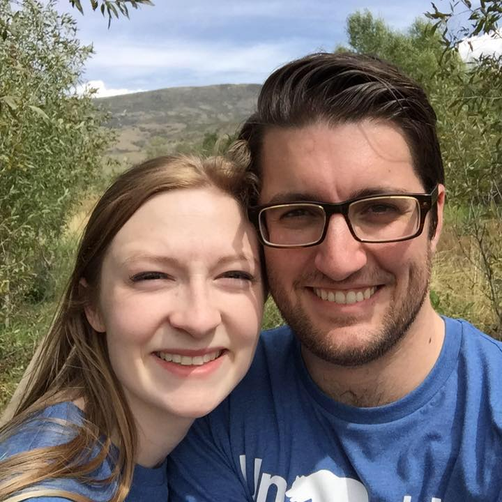

Travel is fatal to prejudice, bigotry, and narrow-mindedness, and many of our people need it sorely on these accounts. Broad, wholesome, charitable views of men and things cannot be acquired by vegetating in one little corner of the earth all one's lifetime. -Mark Twain |
 |
|
As I stated earlier, my name is Cameron Lewis. I'm a 28 year old software engineering prodigy. Well, not quite yet. I am attending BYU-Idaho online from Provo, where I am currently living. I got my Associate's Degree from BYU-Idaho, but then transferred to BYU in Provo, where I began studying International Relations, with a desire to be a social entrepreneur solving humanitarian crises. I ultimately realized this dream would be more easily realized with a more specialized and technical skill-set, so I decided upon doing Software Engineering. But it takes quite a bit longer at BYU! So I transferred back to BYU-Idaho. Though working in humanitarian capacity still interests me, the idea of working in a research and development division also seems appealing. California is my home state, but I think I'll set up camp in Seattle, WA in the coming years. My wife (Brittany) and I have been married for four years, and each enjoy being married to the best friend we've ever had. Sadly, we have no children yet, but it's a desire we'd like to see fulfilled soon. |
||||||||||||||||||||
|